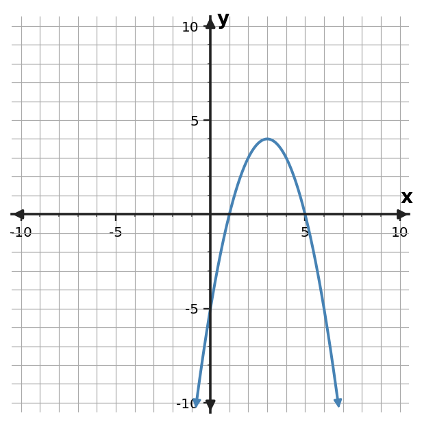

Algebra Practice 4.5 :::: Set 3
1. A student claims the axis of symmetry of $y=x^2+6x+5$ is $x=6$ because the middle coefficient is 6. Critique the claim.
2. For $y=(x-1)(x-5)$, predict the x-intercepts and axis of symmetry before graphing.
3. For $y=x^2 - x - 6$, identify the y-intercept and the direction of opening.
4. Use the table to identify the axis of symmetry and vertex of the quadratic pattern.
| x | y |
|---|---|
| -1 | 2 |
| 0 | -1 |
| 1 | -2 |
| 2 | -1 |
| 3 | 2 |
5. Use the graph to identify the vertex, axis of symmetry, direction of opening, and any visible x-intercepts.

6. Use the quadratic table to connect the numerical pattern to graph features. Identify the vertex, axis of symmetry, and direction of opening.
| x | y |
|---|---|
| 0 | 5 |
| 1 | 2 |
| 2 | 1 |
| 3 | 2 |
| 4 | 5 |
7. From the graph, predict the vertex, axis of symmetry, direction of opening, and x-intercepts.

8. For $y=x^2 + x - 6$, identify the y-intercept and the direction of opening.
9. Predict the key graph features from the table: vertex, axis of symmetry, and direction of opening.
| x | y |
|---|---|
| -3 | -4 |
| -2 | -1 |
| -1 | 0 |
| 0 | -1 |
| 1 | -4 |
10. Use the graph to identify the vertex, axis of symmetry, direction of opening, and any visible x-intercepts.

11. A student says $y=(x-2)(x+4)$ has x-intercepts 2 and 4. Critique the claim.
12. For $y=(x-4)(x+2)$, predict the x-intercepts and axis of symmetry before graphing.
13. A student claims the table has axis of symmetry $x=4$. Use the paired table values to critique the claim and identify the correct vertex.
| x | y |
|---|---|
| 1 | 2 |
| 2 | -1 |
| 3 | -2 |
| 4 | -1 |
| 5 | 2 |
14. A student claims this quadratic has axis of symmetry $x=5$. Use the graph to critique the claim.

15. A student claims this quadratic opens upward. Use the graph to critique the claim.

16. A student claims $y=-x^2+3x+2$ opens upward because the constant term is positive. Critique the claim.
17. For $y=(x+1)(x-4)$, predict the x-intercepts and axis of symmetry before graphing.
18. For $y=x^2 - 6x + 5$, identify the y-intercept and the direction of opening.
19. Adult tickets cost \$8 and student tickets cost \$5. A school sold 9 tickets for \$60. Write and solve a system to determine how many of each type were sold.
20. Adult tickets cost \$8 and student tickets cost \$5. A school sold 7 tickets for \$41. Write and solve a system to determine how many of each type were sold.
21. Adult tickets cost \$8 and student tickets cost \$5. A school sold 6 tickets for \$39. Write and solve a system to determine how many of each type were sold.
22. A linear model for a school fundraiser is $M=1.5d+20$, where $d$ is days and $M$ is hundreds of dollars. Predict $M$ at $d=7$ and interpret the slope and intercept.
23. A linear model for a school fundraiser is $M=4d+8$, where $d$ is days and $M$ is hundreds of dollars. Predict $M$ at $d=8$ and interpret the slope and intercept.
24. A linear model for a school fundraiser is $M=2d+5$, where $d$ is days and $M$ is hundreds of dollars. Predict $M$ at $d=6$ and interpret the slope and intercept.